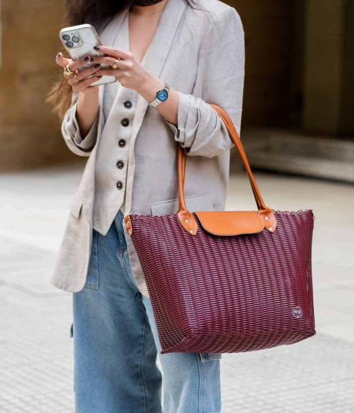

Línea Eva
Bolso Eva
Versátil y espacioso, hecho a mano en El Salvador con fibras plásticas recicladas y cuero. Incluye asas largas para hombro y correa ajustable. Forrado internamente con bolsillo pequeño.
- Base: 12" x 7"
- Altura: 12"/21,5" (sin asas/con asas)
- Materiales: Plástico reciclado y cuero